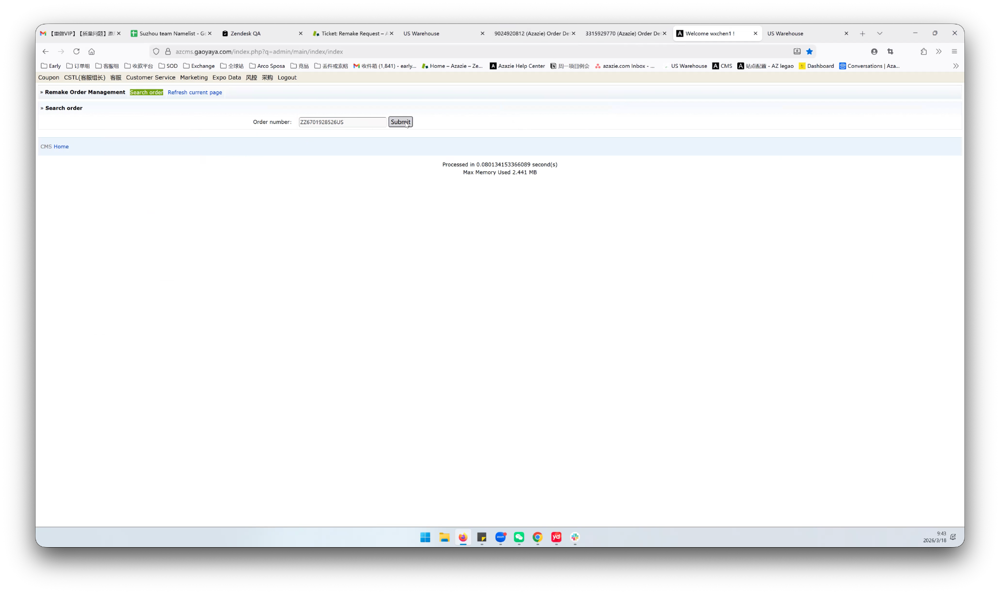
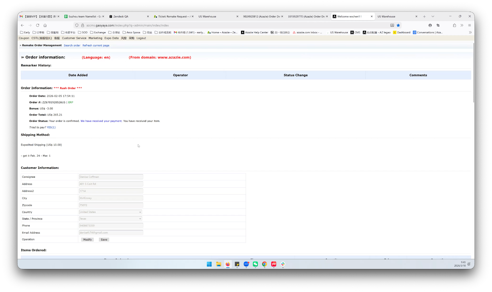
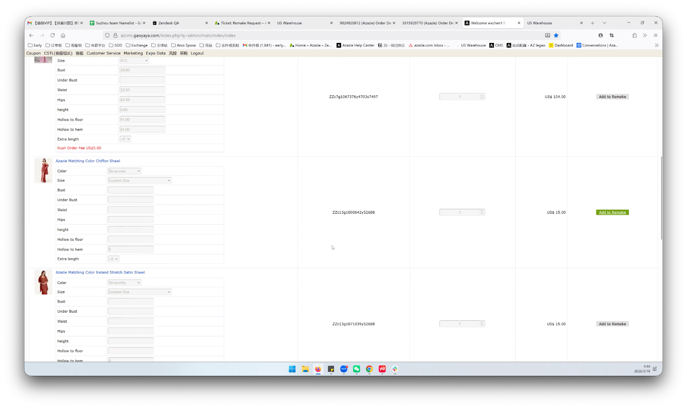
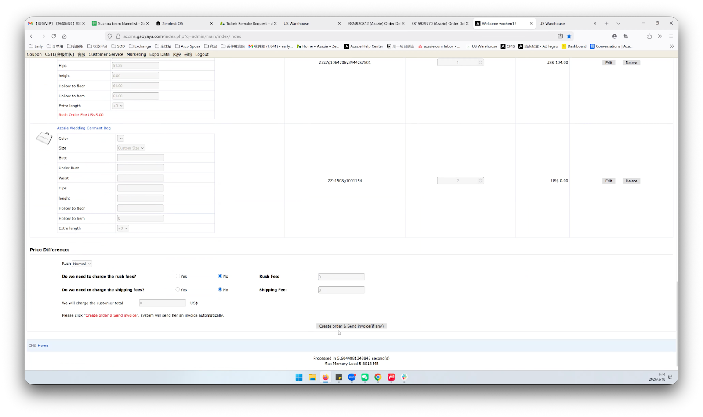
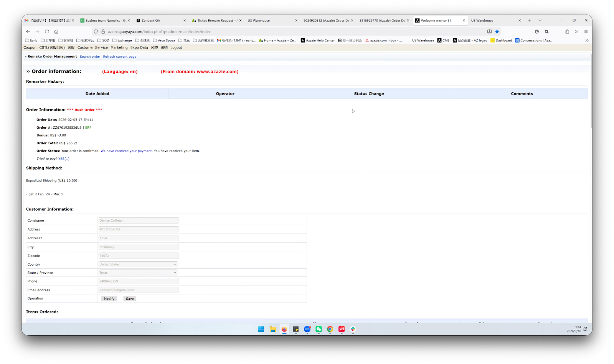

Which Flow Should I Use?
Quick Remake (~80% of cases)
- Full order remake
- Logistics issues (RTS, lost package)
- All items need to be remade
- One click — fastest option
Standard Remake (~20% of cases)
- Partial order remake
- Quality issue on specific item(s)
- Multi-package order, only one lost
- Need to select specific items
Standard Remake (Manual Item Selection) Standard
1
Navigate to Remake Order Management
Two ways to get there:
Path A: Customer Service → Order Others → Place Remake Order
Path B: Customer Service → Order Management → find the order
Path B: Customer Service → Order Management → find the order
.png)
Customer Service > Order Others > Place Remake Order
Enter the original order number and click Submit.

Remake Order Management — enter order number
2
Review Order & Customer Information
The system displays order details, shipping info, and customer info. You can edit customer information here or in the ERP system.

Order Information — review before proceeding
3
Select Items & Click "Add to Remake"
Scroll to the product list. For each item you want to remake, click "Add to Remake".
The system does not support remaking the Azazie wedding garment bag alone (complimentary item).

Click "Add to Remake" for each item
4
Click "Create Order" & Reconfirm
The system will ask you to reconfirm:
- Do you want to change the order email?
- Do you want to change the tracking number?
- Do you want to change the customer email?
Make sure the customer email is NOT set to
remake@i9i8.com. Change it to the customer's actual email.

Reconfirm details before creating the order
5
Wait ~1 Minute for Order Creation
A popup will confirm the remake order has been created. Find the new remake order number in the Status Change tab.

Success — remake order created, visible in Status Change
6
Verify in ERP
After the order syncs to ERP, you'll see the new remake order linked to the original order.
Quick Remake (One-Click Full Order) Quick
1
Navigate to Remake Order Management
Same as Standard Remake — go to Customer Service → Order Others → Place Remake Order, enter the order number, and click Submit.
2
Click "Remake All"
At the top of the order detail, you'll see the Quick Remake section. Click the "Remake All" button.
This will automatically select all available items and pre-fill the original order information.
3
Confirm Remake Details
A confirmation dialog shows: original order number, items to remake, customer email, and shipping address. Verify everything is correct.
Make sure the customer email is correct and NOT set to
remake@i9i8.com. The system will warn you if it detects the default email.
4
Wait ~1 Minute for Order Creation
The system will process and show a success popup with the new remake order number.
5
Verify in Status Change
Click "View in Status Change" in the success popup, or go to the Status Change tab to see the new entry.
Exceptions & Important Notes Reference
| Item | Details |
|---|---|
| Garment bags | Complimentary garment bags cannot be remade alone. They will show as "Unavailable" in the product list. |
| Customer email | Always verify the customer email before creating a remake order. The default remake@i9i8.com must be changed to the customer's actual email. |
| Partial remake | If an order was shipped in multiple packages and only one is lost, use the Standard Remake flow to select specific items. |
| Custom items | Items with customization (photo, embroidery, letters) may not be remakeable if historical data is unavailable. Contact Early for manual handling. |
| Processing time | Order creation takes ~1 minute. Do not close the page during processing. |
| Tax ID countries | Some countries require tax ID for shipping. If the order is flagged, verify tax info before proceeding or contact Early. |
Need Help?
Domestic CS Contact
Early
Process questions, exception handling, escalations
US CS Contact
Jennifer
US team permissions, access requests, training
System Support
Tech Team
System errors, bugs — submit via internal ticket